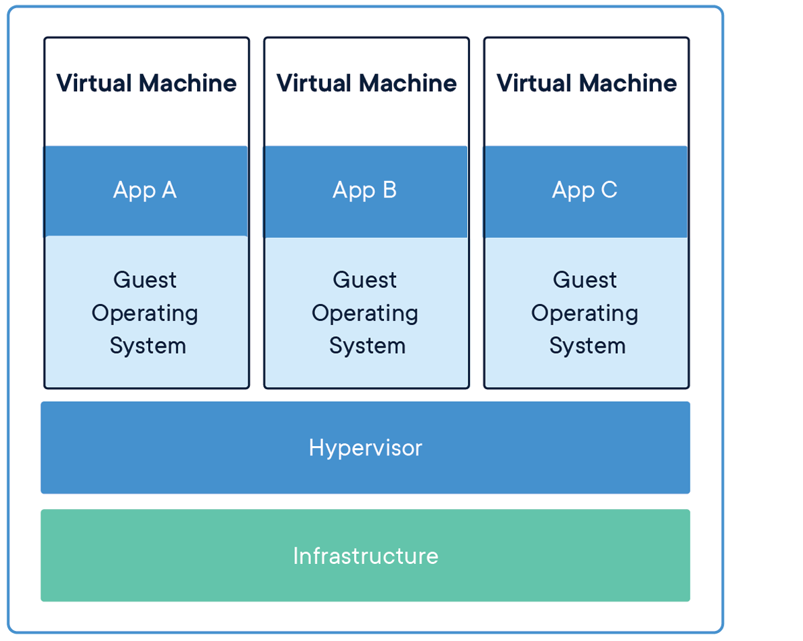

1. 용어¶
1.1. 클라우드¶
서버, 스토리지, SW등 ICT 자원을 구매하여( 비용을 내고 내마음대로 구축하는 !!) 소유하지 않고, 필요 시 인터넷을 통해 서비스 형태(as a service)로 이용하는 방식( as a service )
1.2. 빅데이터¶
빅 데이터(영어: big data)란 기존 데이터베이스 관리도구로 데이터를 수집, 저장, 관리, 분석할 수 있는 역량을 넘어서는 대량의 정형 또는 비정형 데이터 집합 및 이러한 데이터로부터 가치를 추출하고 결과를 분석하는 기술 을 의미한다 빅데이터란 양이 많고 다양하고 속도가 급격하게 증가하는(3V, Volume, Velocity, Variety) 데이터를 뜻한다.
서버, 스토리지, SW등 ICT 자원을 구매하여( 비용을 내고 내마음대로 구축하는 !!) 소유하지 않고, 필요 시 인터넷을 통해 서비스 형태(as a service)로 이용하는 방식( as a service )
요즘은 빅데이터 관련 도구, 플랫폼, 분석 기법까지 포괄하는 용어로 사용되고 있다. 빅데이터는 다양한 데이터 소스, 처리를 위한 플랫폼, 활용서비스로 구성된다. 다양한 데이터 소스는 센서 데이터, 소셜 데이터, 공공/기업 데이터 등이 있고 플랫폼으로는 다양한 제품군이 있을 것이다. 활용 서비스로는 소셜 미디어, 금융, 보험, 의료등 다양한 분야에서 사용될 수 있다.
빅데이터 처리를 위한 플랫폼 또는 이슈는 저장과 분석(처리, 연산) 으로 나눌 수 있다. 저장할때는 HDFS, NoSQL을 사용할 수 있고 분석 솔루션으로는 맵리듀스, Spark이 사용된다. 분석 기술로는 텍스트 마이닝(Text mining), 평판 분석(Opinion Mining), 소셜 네트워크 분석, 클러스터 분석 기술 시각화는 D3.js등이 있다.
빅데이터 분석이 필요한 경우는 다음과 같다.
- 처리 복잡도가 높다.
- 처리 데이터가 방대하다.
- 비정형 데이터 비중이 높다.
- 처리/분석 유연성이 높다.
빅데이터 활용 예시
- 서울시 심야버스 노선 최적화
1.3. Docker¶
Docker란 Docker 컨테이너 이미지(container image)를 빌드하고 컨테이너(container)를 실행, 배포할때 사용하는 도구이다. Docker는 초기에 소프트웨어 의존성과 인프라를 분리하자는 요구사항을 해결하기 위해 개발되었다. 그 결과, Docker는 컨테이너가 인프라에 관계없이 동작하게 도와주며, 컨테이너의 컴퓨팅 자원를 자유롭게 설정할 수 있도록 도와준다.
컨테이너 이미지란 코드, 시스템 도구, 런타임, 라이브러리를 포함한 실행가능한 읽기전용 패키지(템플릿)이며 컨테이너 생성을 위해 사용한다. 이미지가 모든 환경 정보를 포함하므로 실행된 컨테이너는 개발, 스테이징, 운영에서 일관적으로 동작한다. Docker 컨테이너 이미지는 Docker 컨테이너가 되어 Docker Engine위에서 동작하게 된다.
Docker 이미지와 컨테이너 기술이 주는 장점은 다음과 같다.
- 매번 동일한 환경를 구성하기 위해 소요되는 시간과 노력을 줄여줌
- 동일한 이미지를 여러번 실행하더라도 외부 환경에 영향을 받지 않고 일관된 동작을 보장
- 어떠한 서버에서도 바로 실행 가능. Cloud, Linux, Windows등 가능
- 소프트웨어 버전관리가 매우 쉬움
- 컨테이너마다 OS가 필요 없으므로 사이즈가 작음 (컨테이너는 호스트 OS의 커널을 공유하며 COW로 레이어를 공유)
- VM 기술과 유사하게 컨테이너와 외부 환경 그리고 컨테이너간 격리성을 제공
마지막으로 컨테이너(container)란 소스코드와 관련 의존성을 패키징한 소프트웨어의 표준화된 단위이다. 컨테이너는 Docker Engine 위에서 동작한다.
여담으로 많은 Serverless 프레임워크는 도커 컨테이너 기술을 이용한다고 한다.
1.3.1. 컨테이너와 가상머신(VM, Virtual Machine)¶
컨테이너와 가상머신은 격리성, 컴퓨팅 자원 설정을 등 유사한 부분이 있다. 가장 큰 차이점은 가상머신은 하드웨어를 가상화 하지만 컨테이너는 운영체제(OS)를 가상화 한다는 것이다. 리눅스 환경에서는 cgroups, namespaces등을 이용해 가상화가 가능하다.

컨테이너는 하나의 운영체제 커널을 공유하며 VM보다 크기가 작다.
가상머신은 하드웨어를 가상화하여 가상환경을 구성한다. 또한 전체 운영체제가 로딩되므로 기가바이트 정도의 공간을 차지한다. 그리고 가상머신은 컨테이너에 비해 부팅이 느리다.
1.3.2. COW(copy-on-write)와 계층(Layer)¶
여러 계층이 겹쳐져서 하나의 컨테이너 이미지를 구성한다. 예를들어 스크래치에 OS, 패키지1, 패키지2, 미들웨어1, 바이너리1, 바이너리2가 순서대로 복사될 경우, 복사가 일어날때 마다 계층이 하나씩 생성된다. 각 계층은 이전 계층의 변경 사항이다. 최종적으로 모든 계층이 순서대로 쌓여서 하나의 이미지를 만들어 낸다.
또한 이미지를 구성하는 모든 계층은 읽기 전용이다. 읽기 전용으로 만듬으로써 서로 다른 이미지가 읽기/쓰기 계층을 제외한 여러개의 계층을 공유하는 것이 가능해진다. 읽기 전용 구조가 아니라면 A라는 이미지와 B라는 이미지가 내용이 거의 비슷함에도 불구하고 똑같은 풀 복사본을 가지고 있어야 한다. 또한 컨테이너가 시작될때 마다 전체 레이어를 복사를 해야한다. 이는 엄청난 오버헤드를 발생시킨다. 결과적으로, 읽기전용 계층 덕분에 공간을 줄일 수 있으며 부팅 시간도 줄일 수 있게 된다.
자연스럽게 이런 구조와 맞는것은 COW(copy-on-write) 알고리즘이다. COW는 변경이 발생하면 원본을 복사하여 변경을 적용하는 알고리즘이다.
컨테이너는 파일 변경을 위해 Writable Container Layer를 별도로 배치하고, COW 알고리즘에 따라 새로운 파일만 저장한다. Dockerfile로 이미지를 생성할때 역시 이러한 알고리즘이 적용 될 것이라 여겨진다.